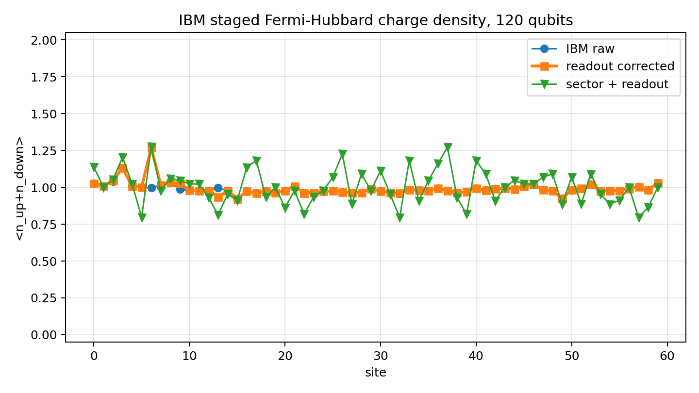

Complete, challengeable quantum projects from students, hobbyists, independent researchers, and small teams. Every entry links the official work to a hardware implementation, a classical competitor, and an explicit claim boundary.
What counts here
Local practical advantage means that a measured quantum workflow reached a useful answer faster than a named classical workflow for the same stated task on the resources actually available to the project. It is not proof against every classical algorithm or supercomputer.
A stronger classical result is not a problem for this list. It is a successful challenge. The entry and its classification should change when the evidence changes.
Execution-metric and diagnostic entries are included with separate labels; they do not assert validated time-to-answer advantage.
Local execution-metric ratio; accuracy unvalidated

One of the measured outcomes behind the list: the 120-qubit Fermi-Hubbard charge-density profile. The sector-plus-readout route is diagnostic because postselection discarded 98.9 percent of shots.
Local time-to-answer separation
Fermi-Hubbard dynamics on 120 qubits
A 60-site Fermi-Hubbard hardware workflow produced local charge, spin, and double-occupancy observables and was compared with local MPS and observable-specific Majorana calculations.
Scale
120 qubits / 60 sites
Backend
IBM Kingston through Q-CTRL Fire Opal
Primary timing
33.148928 s
Timing scope
Estimated main plus readout circuit execution; excludes full human and cloud workflow time
Measured comparison. The quantum execution proxy was 272.50x shorter than the local chi=256 MPS wall time for this declared instance.
Quantum result. The hardware produced a full 120-qubit observable profile; raw mean double occupancy was 0.22862549 and readout-corrected mean double occupancy was 0.23067722.
Classical baselines
Method
Wall time
Status
Local quimb MPS with maximum bond dimension chi=256
9,033 s
not fully converged; maximum bond reached the requested cap
Local Majorana propagation with cutoff 2
20.96 s
faster than the quantum proxy but visibly inaccurate
Local Majorana propagation with cutoff 4
1,153.51 s
close to the chi=256 value for this selected observable
Non-Abelian SU(2) hadron dynamics on 120 active qubits
A Loop-String-Hadron implementation follows a differential hadron signal on a 60-site lattice and compares the quantum route with local circuit-MPS checks and published tensor-network and Pauli-propagation baselines.
Scale
120 qubits / 60 sites
Backend
IBM hardware through Q-CTRL Fire Opal
Primary timing
1.425408 s
Timing scope
Local hardware time including readout circuits; excludes queue, API, compilation, and local analysis
Measured comparison. Both the local circuit checks and the paper-native baselines show a substantial runtime separation under their declared timing definitions.
Quantum result. The local hardware route produced charge-sector and differential-observable data for the 120-qubit circuit family.
A tracker-compatible 80-qubit extension estimates an Operator Loschmidt Echo from finite computational-basis samples and compares the complete mitigated hardware action with a bounded tracker-linked BP-TN calculation.
Scale
80 qubits
Backend
IBM Kingston through Q-CTRL Fire Opal
Primary timing
328 s
Timing scope
Complete Fire Opal action wall time for all sixteen mitigated circuits
Measured comparison. The incomplete bond-dimension-64 classical delta half alone exceeded the complete Fire Opal action by more than 2.75x on this machine.
Quantum result. The measured delta/delta0 OLE ratio was 0.74028847 +/- 0.01663657; all eight sample ratios were positive.
Classical baselines
Method
Wall time
Status
Tracker-linked Heisenberg BP-TN at bond dimension 16
365.14 s
not converged; apparent ratio is not a valid physical estimate
Tracker-linked Heisenberg BP-TN delta half at bond dimension 32
342.42 s
not converged; value shifted by 86 percent from bond dimension 16
Tracker-linked Heisenberg BP-TN delta half at bond dimension 64
A complete 70-data-qubit non-Clifford circuit was sampled on IBM hardware, alongside an independent 70+8-qubit stabilizer-verification workflow and local classical scaling studies.
Scale
70 qubits
Backend
IBM Kingston through Q-CTRL Fire Opal and IBM Runtime
Primary timing
19 s
Timing scope
Provider quantum-seconds for 256 samples from the complete 70-data-qubit circuit; excludes queue and local workflow time
Measured comparison. Hardware returned 256 samples in 19 quantum-seconds, while a local Aer fit projects about 6.89 million years for one 70-qubit sample; sample counts and output quality are not matched.
Quantum result. The complete circuit returned 256 samples. The separate checked dataset retained 4,519 of 184,320 shots and gave a graph-state-prefix point estimate of 0.01217; its predeclared one-sided 95 percent lower-bound test failed. The original restricted-access IBM Boston execution reported substantially stronger effective performance than this independently accessible Kingston reproduction.
Classical baselines
Method
Wall time
Status
Local Qiskit Aer extended-stabilizer fit evaluated at 70 qubits
217,512,854,796,362.625 s
extrapolated; not measured at 70 qubits and not quality matched
Local ITensorMPS at maximum bond dimension 64
205.36 s
completed but strongly truncated and not converged
Local exact MPS anchor at 14 induced qubits
3.23 s
exact small-width validation; not a 70-qubit baseline
The Tracker result used restricted access to IBM Boston, whereas this independent reproduction used the available IBM Kingston route; backend access, physical mapping, and calibration window are therefore not matched.
Boston produced a substantially stronger workload-level result, but its historical calibration and complete raw fidelity-analysis record are not public, so the result does not establish that Boston was universally better hardware than Kingston.
The 70-qubit classical runtime is extrapolated from measurements ending at 12 qubits, not measured at full width.
The quantum samples have no validated full-distribution fidelity, and the separate predeclared 95 percent stabilizer test failed.
The post-hoc 75 percent lower bound is an exploratory sensitivity result, not 75 percent fidelity and not evidence of quantum advantage.
A complete 51-qubit IBM Fez PEA/ZNE trajectory detected a reproducible Floquet-Ising oscillation in less declared execution time than a local D=64 PEPS simple-update trajectory for the same coordination-two magnetization.
Scale
51 qubits
Backend
IBM Fez
Primary timing
41 s
Timing scope
QPU execution time for the complete PEA/ZNE route; excludes queueing, orchestration, retrieval, analysis, and classical mitigation processing
Measured comparison. The 41-QPU-second PEA/ZNE route detected the 51-qubit oscillation 8.93x sooner than the 366.17-second local D=64 PEPS-SU trajectory under the declared timing scopes.
Quantum result. The fitted PEA/ZNE period was 4.76 cycles with profile interval 4.62 to 4.92; the fitted oscillation amplitude was about 5.2 conditional fit standard errors, consistent with two independent raw plus M3 trajectories at periods 4.48 and 4.61.
Classical baselines
Method
Wall time
Status
Local Quimb arbitrary-geometry PEPS simple update at D=64
366.169545 s
complete; D=40-to-D=64 convergence accepted through cycle 8 only, with cycles 9-16 diagnostic rather than converged
Local Quimb arbitrary-geometry PEPS simple update at D=40
118.33 s
complete; used with D=64 to define the low-D convergence window
Published PEPS-BP production calculations at D=512 and D=700
not available
paper baseline; 35.1 hours at D=512 and 599.8 hours at D=700, with late-cycle convergence limitations
This is a partial, task-specific practical time-to-signal advantage, not a general or complexity-theoretic quantum-advantage claim.
The 41-second timing is QPU execution only and excludes queueing, orchestration, retrieval, analysis, and classical mitigation processing.
The classical D=64 PEPS-SU trajectory is converged by the declared low-D diagnostic only through cycle 8; cycles 9-16 are not a claim-ready classical reference.
Across the eight trusted cycles, PEA/ZNE has diagnostic SRMSE 3.154 and maximum absolute z-score 6.932, so the preregistered matched-accuracy thresholds are not met.
The local PEPS-SU implementation is not the paper's PEPS-BP production method at D=512 and D=700, and a stronger observable-specific classical result may change the ranking.
Local execution-metric ratio; accuracy unvalidated
2D Local Quantum Advantage: 6x6 Hubbard on Nighthawk
A student/hobby project ran full-fermion 6x6 Hubbard circuits on 72 modes and measured charge, spin and doublons. Its local milestone is circa 20x less registered QPU usage than the current laptop-side chi64 MPS kernel time. The timing ratio is measured; numerical accuracy and end-to-end advantage remain unvalidated.
Scale
72 qubits / 36 sites
Backend
IBM Nighthawk (ibm_phoenix), IBM Runtime Sampler
Primary timing
7 s
Timing scope
Registered qpu_charge_time_seconds for the entire paired original/compact job daf6foe42tqs73avhoeg, including training/calibration circuits; not per arm or end-to-end wall time
Measured comparison. The local chi64 kernel took 150.819180 s versus 7 registered QPU s for the complete paired job: 21.55x, or circa 20x. The separate 8-QPU-second job gives 18.85x. This is an execution-metric ratio, not an end-to-end or matched-accuracy speedup.
Quantum result. Readout+TFLO original gave N=31.39633 and D/site=0.090130; compact gave N=31.23064 and D/site=0.077194. Sitewise charge/spin/doublon RMS differences from the uncertified chi64 reference were 0.083889/0.091851/0.050805 (original) and 0.109304/0.125864/0.064116 (compact). Both TFLO holdout checks failed; reconstructed local probabilities reached -0.077303 and -0.092726. These target estimates are unvalidated.
Classical baselines
Method
Wall time
Status
Local Quimb finite-circuit MPS, chi=64, one thread
150.81918 s
completed but not converged or certified; reference N=31.9999992 and D/site=0.087896; chi128 was not run
Same chi64 calculation, cold worker
156.905497 s
completed; broader timing of the same calculation, not a second independent reference
Access. Nine detailed Edukaizen articles and this register entry are public. The complete source, raw runs and theory archive remain in a private GitHub repository; access requires permission. Admission uses the public project-report route, not a claim that the complete implementation is publicly downloadable.
Claim boundary
The approximately 20x milestone compares local classical kernel time with registered QPU usage. It is not a 20x shorter end-to-end run or a matched-accuracy quantum advantage.
The 7 seconds cover the entire paired job, not each arm. The earlier 8-second DD/TFLO result is a separate job; mitigation settings and budgets must not be mixed.
The latest provider running-to-finished interval was about 181 seconds, already longer than the 150.819-second classical kernel; queueing, preparation and local analysis add other overheads.
The chi64 reference has no certified 6x6 error bound and is not converged. Chi128 was not performed, and its estimated cost cannot be counted as extra measured quantum speedup. Concurrent local work also limits timing comparability.
Both TFLO holdout checks failed and some reconstructed probabilities are negative. The reported charge, spin and doublon estimates remain unvalidated; apparent agreement of individual observables does not validate the estimator.
Exact N=32 is a model constraint, not a replacement for measured N. Original and compact results retain their own measured values and reference differences.
This local resource comparison does not establish superiority to all classical algorithms, Google/Bonsai results, or a superconducting-material simulation. The 72-mode model and two-step finite circuit define the tested task.
The public reports describe the evidence, but the raw research archive remains private. Full independent reproduction therefore requires access permission; listing the project does not remove this limitation.
Copy the entry template, add the official source and full implementation, state both timing scopes, and preserve every convergence or accuracy limitation. Classical challenges are first-class contributions.